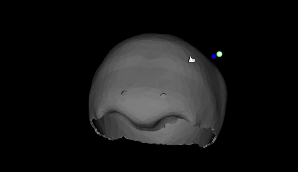

I am glad to announce that our work "Anatomical Mesh-based Virtual Fixtures for Surgical Robots" accepted in IROS 2020 has now been open-sourced! You can find the project on github here.
In this work, we present an algorithm that automatically generates virtual fixtures given a 3D object in STL form. The algorithm is able to handle arbitrarily complex objects and run in kHZ frequency. The virtual fixtures will provide a virtual barrier such that the surgical tool cannot enter the object. You can read more about how it works in our paper at https://arxiv.org/abs/2006.02415.
In the github repo, you can find an interactive demo where you use your mouse to control a dummy robot represented as a blue sphere. And you don't need an actual robot to try it out :)
 Interactive demo.You can also find example code of how to integrate it with dVRK. It is worth noting that the code can be applied to all CISST-based robots not limited to dVRK. For example, if you wrap your UR with CISST code, you can apply the virtual fixtures with only few lines of code!